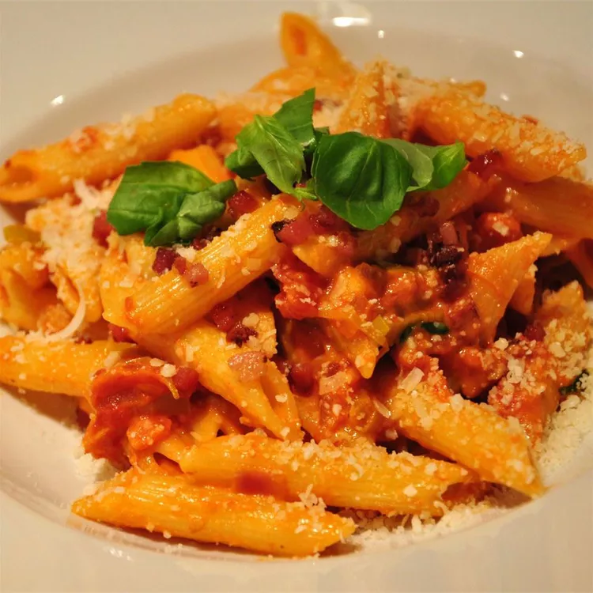

Pasta alla Vodka

Description
This pasta a la vodka is an easy recipe to throw together for a quick dinner any night of the week — the sauce can be made while you cook the pasta. Sprinkle with Parmesan cheese to serve. Delicious!
Ingredients
- 2 tablespoons olive oil
- 2 cloves garlic, minced
- 1 (28 ounce) can whole peeled tomatoes
- ½ cup chopped fresh basil
- salt and pepper to taste
- ¼ cup vodka
- 1 pound penne pasta
- 1 pint heavy cream
Steps
- In a large skillet over medium heat, cook garlic in olive oil until tender, 1 to 2 minutes. Stir in tomatoes, breaking up a bit with a fork. Stir in basil, salt, and pepper and simmer 15 minutes. Stir in vodka and cook 15 minutes more.
- Meanwhile, bring a large pot of lightly salted water to a boil. Add pasta and cook for 8 to 10 minutes or until al dente; drain.
- Stir cream into sauce and cook 10 minutes more. Toss with hot pasta.